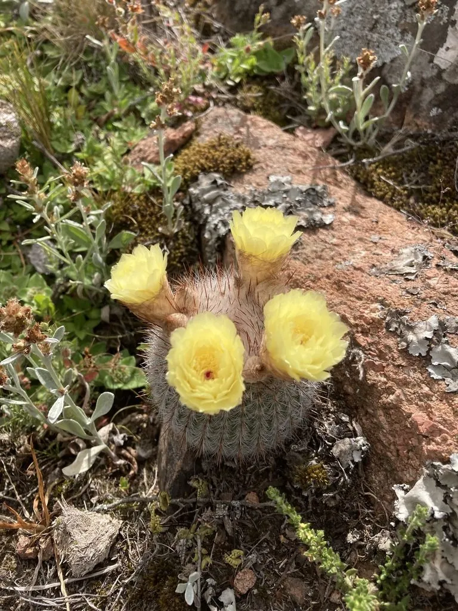

多肉植物 · 植物界
白小町 Parodia scopa

仙人掌科锦绣玉属多年生肉质植物，球体密被白色短刺，如覆一层白霜，花黄色，是清新素雅的仙人球品种。
- 分类
- 门被子植物门纲木兰纲目石竹目科仙人掌科属锦绣玉属
- 栖息环境
- 原产巴西南部与乌拉圭的草原岩地，喜光耐旱
- 地理分布
- 原产巴西南部、乌拉圭；中国各地作为观赏仙人球栽培
- 保护级别
- 暂无评估；栽培观赏植物，不涉及保护等级
物种志
白小町为仙人掌科锦绣玉属多年生肉质植物，球体球形至短圆柱形，高约十厘米，直径六至八厘米，丛生。棱多数，刺座密集，周刺白色、细短，覆盖球体，使植株呈银白色；中刺数枚、颜色较深。花生于球体顶部，花冠漏斗状，黄色，花期夏季；浆果球形，成熟时红色，种子细小。
白小町原产巴西南部和乌拉圭，中国各地作为观赏仙人球栽培。它喜光、耐旱，夏季高温时需适度遮阴；适宜疏松透气、排水良好的颗粒基质，忌积水和闷热。球体覆白色短刺、清新素雅，群生后如一簇簇小雪球，是仙人球拼盆的常用材料；花黄色，与白刺相衬，观赏效果好。繁殖以分株、播种和嫁接为主。
形态与习性
- 株型球形至短圆柱形，丛生
- 球径直径 6–8 cm，高约 10 cm
- 花期夏季，花黄色
- 光照喜光，夏季适度遮阴
- 水分耐旱，干透浇透
- 土壤疏松排水良好的颗粒土
- 主要用途仙人球拼盆、盆栽观赏
趣味知识
- 白小町的白色短刺密布球体，远看像落了一层薄雪。
- 它容易丛生，母球周围会不断长出小球，形成银白色的球丛。
- 白小町的花黄色、开在球顶，与白色刺座形成清爽的对比。